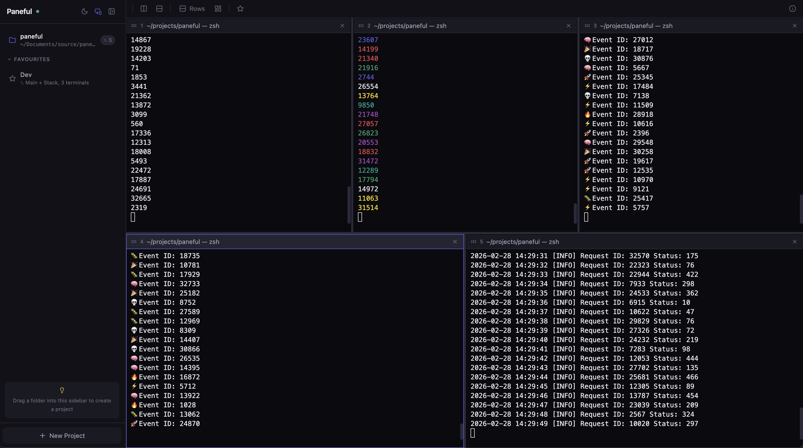

Split panes, organize by project, drag & drop from Finder, sync with your editor — all from a single npm install.

Features
All the power of a dedicated multiplexer with the convenience of a web app.
Five layout presets: columns, rows, main + stack, main + row, and grid. Cycle through them with Cmd+T or auto-reorganize with Cmd+R.
Organize terminals by project. Each project gets its own layout, panes, and working directory. Switch instantly from the sidebar.
Drag folders from Finder into the sidebar to create projects. Drag files into terminal panes to paste their paths as shell-escaped arguments.
Automatically switches the active project when you focus a different editor window. Click into VS Code, and your terminals follow. Learn how to set it up ↓
Save workspace layouts as favourites — name, preset, and per-pane commands. Restore any setup with a single click.
Install as a standalone app with its own Dock icon and WebKit window. No browser tab needed. Updates automatically.
Full keyboard control: split, close, focus by index, move focus, swap panes, toggle sidebar, and cycle layouts — all without touching the mouse.
Press Cmd+R to let Paneful pick the best layout for your current pane count. Smart defaults, zero effort.
Editor Sync
Focus a VS Code window and Paneful instantly switches to that project's terminals. Zero clicking, zero context-switching.
Switch to your VS Code window for my-api
Reads the frontmost app and window title via the macOS Accessibility API
Compares the folder name in the title against your Paneful projects
Sidebar, layout, and all panes switch to my-api
Add Paneful (native app) or Terminal (CLI) in:
This is the default in VS Code and Cursor. No changes needed for most editors.
Click the monitor icon in the sidebar header. Enabled by default.
💡 After updating Paneful, you may need to remove and re-add it in Accessibility settings.
Get Started
One command to install. One command to run.
Install the CLI globally — this is required for everything else.
$ npm i -g panefulStart the server and open Paneful in your browser.
$ panefulGet a native Dock icon and WebKit window — no browser tab needed.
$ paneful --install-appUsage
Everything runs from the paneful command.
$ paneful # Start server and open browser
$ paneful --spawn # Add current directory as a project
$ paneful --port 8080 # Use a specific port
$ paneful --list # List all projects
$ paneful --kill my-project # Kill a project by name
$ paneful --install-app # Install as a native macOS app
$ paneful update # Update to the latest versionUpdating
$ paneful update
Checks npm for the latest version, installs it globally, and rebuilds the native .app if one exists. The Dock icon stays valid automatically.
Keyboard Shortcuts
Never take your hands off the keyboard.
| Shortcut | Action |
|---|---|
| Cmd+N | New pane (vertical split) |
| Cmd+Shift+N | New pane (horizontal split) |
| Cmd+W | Close focused pane |
| Cmd+1-9 | Focus pane by index |
| Cmd+Arrow | Line start / end in terminal |
| Ctrl+Shift+Arrow | Move focus to adjacent pane |
| Shift+Arrow | Swap focused pane with adjacent |
| Cmd+D | Toggle sidebar |
| Cmd+T | Cycle through layout presets |
| Cmd+R | Auto reorganize panes |